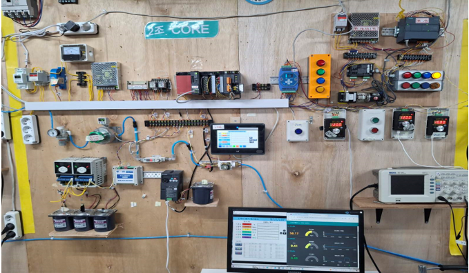
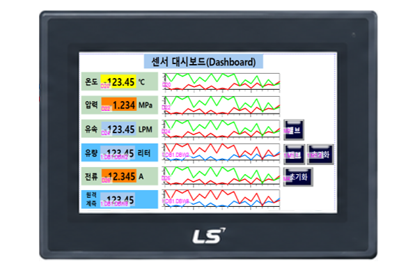
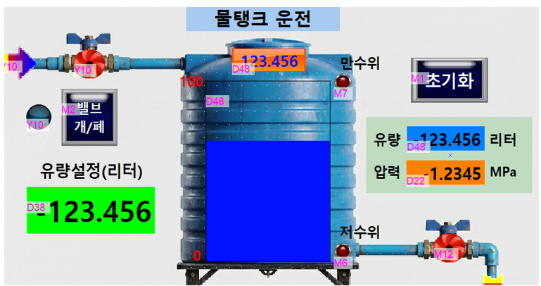
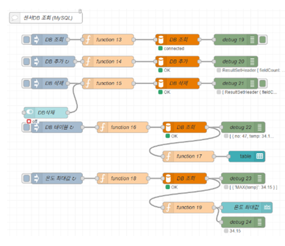

MELSEC·Siemens PLC 시퀀스 제어, 서보·공압(M코드) 인터록, HMI/SCADA 모니터링과 DB 기록을 교육 프로젝트에서 구현하고 검증했습니다. 기아자동차 조립 라인 단기 생산인턴(아르바이트) 경험과 기본적인 영어 의사소통 역량을 바탕으로 생산설비의 안정적인 운영을 지원하겠습니다.
2026.10.06 ~ 2026.11.06 (170시간, 통합 시운전 완료 · 11.06 최종 수료) | 2조 CORE (5인) | 직접 담당: XY 보간 좌표 설정·업데이트, 서보·공압(M코드) 연계운전, 공압 인터록 및 강제 에러 주입 검증
문제: 이미 입고된 동일 물품을 중복 입고하려 하거나, 출고 요청한 번호(예: 3번)의 베이에 다른 물품(예: 4번)이 적재되어 있을 경우 작업자가 이를 인지하지 못하면 재고 혼선 및 오출하가 발생할 우려 존재
해결: 입고 시: 이미 입고된 물품과 동일한 품목을 재입고 시도하면 즉시 경고등을 점등해 중복 적재를 방지함. 출고 시: 스캐너가 배출대에 고정된 구조상 일단 물품을 인출해 오지만, 스캔한 바코드 값(D732)과 요청 번호(D140)가 다르면 황색 경고등(Y16)을 점등시켜 작업자가 확인 후 수동 리셋(M402/M800)으로 복구하도록 구현
문제: 서보 위치결정 이동 중이거나 로드리스(좌·우)·듀얼로드(리프트 전·후) 실린더가 끝 위치에 도달하기 전에 다음 보간 스텝이 실행될 경우 기구 충돌 위험 존재
해결: 축1 M코드 ON(X44) 시 버퍼메모리(U4\G808)에서 M코드 번호(D1000=10~70)를 읽어 실린더(Y10·Y11)를 구동하고, 반드시 오토스위치(CS1~CS4, X00~X03) 완료 접점이 감지된 후에만 M코드 OFF 요구(MOV K1 U4\G1504)를 전송해 다음 스텝으로 넘어가도록 구현
문제: 공압 공급 이상 시 서보가 계속 구동되면 충돌 위험이 있으며, 서보 축 에러(104·105)나 통신 에러(X2E)를 실물 장비에서 매번 물리적으로 유발해 시그널타워 경보 로직을 검증하기에는 설비 손상 우려가 존재
해결: ① [공압 이상 인터록] 운전(M0) 중 공압 이상 감지(X6 b접점) 시 에러 플래그(M111)를 SET하여 서보 축1 정지(Y44)로 구동부를 즉시 멈추고, 공압 복구(M112) 입력 시 에러 해제 및 일시정지 해제(MOV K1 U4\G1500)로 안전하게 재가동되도록 구현.
② [강제 에러 주입 및 시그널타워 분기] HMI에서 D20·D22에 에러값을 강제 주입하는 회로를 구성하여, 적색 점멸·부저(Y15)는 축 에러 104·105 및 공압 이상(M111) 시, 황색 점등(Y16)은 타 축 에러·통신 에러(X2E)·바코드 불일치 시, 녹색 점등(Y17)은 이상 판정이 없을 때(M901 OFF) 출력되도록 명확히 분리해 검증 완료
D20·D22 레지스터에 에러 코드를 강제 주입했습니다. 녹색(Y17)은 중대 에러 판정이 없을 때(M901 OFF) 상시 점등, 적색(Y15)+부저는 축 에러 104·105 또는 공압 이상(M111) 시 점멸, 황색(Y16)은 그 외 축 에러·통신 에러(X2E)·바코드 불일치 시 점등되도록 명확히 구분했습니다.
M0) 중 공압 이상(X6) 감지 시 즉시 M111이 SET되어 축1 정지 신호(Y44)로 서보 이동을 차단합니다. 현장 공압 라인을 점검한 뒤 복구 신호(M112)를 주면 M111 리셋과 함께 모션 모듈 일시정지 해제(U4\G1500=K1)가 실행되어 안전하게 복구됩니다.
2026.09.08 ~ 2026.10.06 (130시간, 완료) | 2조 CORE (5인) | 직접 담당: MELSEC Q03UDVCPU·Siemens S7-1200 센서 환산 래더, HMI 설정값(SV) 정량제어 및 DB 기록 연동
D38, SV)과 실시간 누적 유량(D48)을 비교하여 목표 도달 시(D48 ≥ D38) 솔레노이드 밸브(Y10)를 자동 차단(RST M2)하고, 데이터 초기화(M1)로 다음 회차 운전을 준비하는 로직 구현
iot_sensor 테이블)에 자동 저장·조회하며 데이터 정합성을 검증
문제: 터빈 유량계에서 발생하는 고속 펄스 신호(%I0.3)를 일반 디지털 입력으로 수집할 경우 PLC 스캔 주기 한계로 인해 유량 누적 오차가 발생할 우려 존재
해결: Siemens S7-1200의 고속 카운터 블록(CTRL_HSC, %DB2)을 활용해 펄스 입력을 누적(%DB1.DBW0)하고, CONV 및 CALCULATE 블록을 통해 실수(REAL) 변환 및 배율(0.1)을 적용하여 정확한 실시간 유량(%DB1.DBD12) 및 PV 값 확보
문제: ① 지멘스 PLC와 릴레이 측의 서로 다른 SMPS 전원 사용으로 유량 펄스 신호가 간헐적으로 흔들리는 현상, ② HMI·SCADA·Node-RED 연동 시 소수점 배율 중복 적용으로 표시값이 어긋나는 현상 발생
해결: ① 두 SMPS의 -(0V/GND) 단자를 공통으로 묶어 신호 기준 전위를 안정화하고, ② MELSEC Q03UDVCPU 및 지멘스 유량 태그(%DB1.DBW2)의 환산 배율을 통일하여 표시·저장 오차를 해소함
문제: 물탱크 목표 유량(D38) 도달을 단순 일치(=)로만 비교하면 PLC 스캔 주기 사이 목표값을 넘어선 순간(50.020L 등) 신호를 놓쳐 밸브가 차단되지 않는 연속 과주입이 발생할 수 있음
해결: DLIMIT K1 K100000 D38 D38로 HMI 설정값 입력 범위를 0.001~100.000L로 제한하고, 이상 비교(D48 ≥ D38) 및 만수위 인터록(M7)을 적용해 목표 도달 미검출로 인한 연속 주입을 방지함
%I0.3을 고속 카운터 채널로 할당하고, 제어 데이터 블록(CTRL_HSC)을 호출해 펄스 카운팅을 활성화했습니다. 이를 통해 노이즈에 강한 정밀 유량 계측을 수행하고 결과값을 DB에 매핑했습니다.
iot_sensor 테이블에는 5대 센서 물리량(온도·압력[MPa]·유속·유량·전류)과 기록 시각(date)이 5초 주기로 기록됩니다. PLC 온라인 값 ➔ SCADA 표시값 ➔ Node-RED ➔ MySQL 신규 행을 단계별로 대조해 데이터 정합성을 점검했습니다.
• 온도 (신호발생기 4~20mA, ℃)
• 압력 (Swagelok 4~20mA, MPa)
• 유속 (FM-215 1~5V, LPM)
• 유량 (터빈 홀센서 Pulse, L)
• 전류 (CT 2회관통 4~20mA, A)
• MELSEC Q03UDVCPU
Q64AD CH1~4 아날로그 계측
목표 유량 비교(D48≥D38) → Y10
• Siemens S7-1200
%I0.3 HSC2 고속카운터 유량 계측
• LS eXP2-0700 (.226)
목표 유량(SV) 입력·알람 확인
• X-SCADA & Node-RED
실시간 공정 상태·트렌드 감시
• MySQL (iot_sensor)
5초 주기 5대 물리량 + 타임스탬프
temp, pressure(MPa), lpm, liter, ampere, date
D38 = 50.000L (DLIMIT 제한)D48 ≥ D38 이상 비교로 미검출 방지 (RST M2)아래 실습 화면 이미지를 클릭하면 원본 크기로 크게 확대하여 보실 수 있습니다.




두 프로젝트의 입출력(I/O) 배선 주소와 주요 데이터 레지스터 할당표입니다. 실제 GX Works2 / TIA Portal 래더 화면은 아래 버튼으로 열람하실 수 있습니다.
| 구분 | 디바이스 / 주소 | 연결 기기 및 센서 모델 | 기능 및 공학 단위·인터록 역할 |
|---|---|---|---|
| ASRS 입력 | X00~X03 / X06 |
오토스위치 D-Z73 · D-A93 / 공압센서 |
CS1(좌측 출발) / CS2(우측 인계) / CS3(리프트 후진) / CS4(리프트 전진) / X06(공압 이상 감지 ➔ M111·Y44 정지) |
| ASRS 센서 | HOME / RLS / FLS |
포토 마이크로센서 EE-SX674 · 674A |
원점(HOME): a접점·Dark-ON(백색선 오픈) / 상하좌우 리밋(RLS·FLS): b접점·Light-ON(24V 연결) |
| ASRS 출력 | Y10 / Y11 / Y12~Y14 |
솔레노이드 SY3120-5LZ · 브레이크 릴레이 |
Y10(로드리스 좌·우) / Y11(듀얼로드 전·후) / Y12(IR 바코드 트리거) / Y14(2축 브레이크) |
| ASRS 알람 | Y15 / Y16 / Y17 |
PATLITE 시그널타워 LR6-302PJB |
Y15(적색: 104·105 축에러 강제주입 및 X6 공압이상 점멸) / Y16(황색: 중복입고·출고불일치·X2E 통신알람) / Y17(녹색: M901 OFF 정상) |
| IoT 아날로그 | %IW64 ➔ MD10 |
Siemens S7-1200 + 아날로그 입력 |
온도 센서 척도 변환 (NORM_X ➔ SCALE_X, 0.0 ~ 100.0 ℃) |
| IoT 고속카운터 | %I0.3 ➔ DB1.DBD12 |
Siemens S7-1200 HSC2 (CTRL_HSC) |
터빈 유량계 고속 펄스 계측 및 CONV/CALCULATE 연산을 통한 실시간 유량(LPM) 산출 |
| IoT 펄스/DB | %DB1.DBW2 ➔ MySQL |
Siemens S7-1200 · MySQL |
유량 누적 PV(%DB1.DBW2) ➔ 5초 주기 iot_sensor 테이블(온도·압력[MPa]·유속·유량·전류 + 시각 date) 자동 저장 |
PLC·HMI 설비 운영 및 자동화 제어에 필요한 모니터링·인터록·데이터 기록 실습 역량과 현장·어학 경험입니다.
미쓰비시(Q03UDVCPU 주력) 및 지멘스(S7-1200 기초·HSC 계측) 로직 구현 및 해독, 서보 위치결정(QD77MS4)·공압 실린더(M코드·오토스위치) 인터록 확인 및 강제 에러 주입·복구 실습
HMI/SCADA 화면을 통한 목표 설정값(SV) 적용 및 5대 물리량(온도·압력[MPa]·유속·유량·전류) 모니터링, 바코드 품목 대조를 통한 입출고 상태 관리, MySQL·엑셀(Excel) 기반 운전 데이터 기록 정리
기아자동차 조립 라인 단기 생산인턴(아르바이트) 근무로 체득한 부품·공구 5S 정위치 정리와 표준작업절차(SOP) 준수 습관, 유럽 배낭여행 및 외국인 교류를 통해 쌓은 기본 영어 의사소통 역량
| 성 명 | 김 성 훈 | 생년월일 | 1994년생 (만 32세) | 연 락 처 | 010-9228-9441 | |
|---|---|---|---|---|---|---|
| 이 메 일 | gnslekgo@naver.com | 지원직무 | PLC · HMI 자동화 제어 | |||
| 주 소 | 경기도 거주 (상세 주소는 상단 표시 버튼 클릭 시 열람 가능) | 근무조건 | 교대근무 · 해외출장 가능 | |||
| 기 간 | 학교명 및 교육과정명 | 전공 / 교육기관 | 상태 / 비고 |
|---|---|---|---|
| 2026.05.27 ~ 2026.11.06 | 스마트팩토리(PLC, HMI) 기반 IoT 구축 및 서보제어 실무자 양성 | 한국직업능력교육원 | 수료 (108일 / 860h) |
| 2011.03 ~ 2018.02 | 한신대학교 | 한국사학과 (4년제 학사) | 졸 업 |
| 구 분 / 기 간 | 자격명 / 근무처 및 수행 내용 | 발급기관 / 부서·역할 | 상태 / 비고 |
|---|---|---|---|
| 국가기술자격 (2026.09) | 전기기능사 | 한국산업인력공단 | 필기합격 (11.27 실기예정) |
| 어학 / 운전면허 | 영어 기본 의사소통 가능 (2026.11.09 OPIc 응시 예정) / 1종 보통 운전면허 | ACTFL / 경찰청 | 응시예정 / 보유 |
| 단기 현장근무 (약 6개월) | 기아자동차 조립 라인 단기 생산인턴 (아르바이트) | 차량 조립 공정 보조·5S | 표준작업절차(SOP) 체득 |
| 대외 소통경험 (약 6개월씩) | 전쟁기념관/박물관 도슨트(해설사) 및 토익 학원 조교 근무 | 관람객 해설 · 수강생 관리 | 기술 전달력 · 성실성 |
| 프로젝트명 / 기간 | 활용 장비 및 기술 스택 | 본인 주도 수행 역할 및 트러블슈팅 성과 |
|---|---|---|
|
서보 기반 자동창고 입출고 시스템 (ASRS) 2026.10.06 ~ 11.06 (170h) |
MELSEC Q03UDVCPU, QD77MS4, MR-J4W2-22B, QJ71C24N, LS HMI (XP-Builder) |
• 2층 8-Bay XY 2축 직선보간 좌표 티칭 및 HMI 좌표 Direct Write 구현 • M코드 버퍼(U4\G808→D1000) 판독 및 오토스위치(X00~X03) 완료 후 OFF 요구(U4\G1504) 핸드셰이크 구현 • 공압 이상(X6) 시 서보 정지(Y44) 인터록, 강제 에러 주입(D20·D22) 기반 3색 시그널타워(Y15~Y17) 분기 및 바코드 불일치 경고 검증 |
|
IoT 기반 필드 센서 계측 및 정량 제어 시스템 2026.09.08 ~ 10.06 (130h) |
MELSEC Q03UDVCPU, Siemens S7-1200 (CTRL_HSC), X-SCADA, MySQL |
• MELSEC Q03UDVCPU 아날로그 센서(온도·압력·전류) 계측 및 S7-1200 고속카운터(HSC2) 펄스 유량 계측 연동 • 물탱크 목표 유량(D48≥D38) 자동 차단(Y10) 및 5초 주기 MySQL DB 자동 로깅 |
과거 기아자동차 조립 라인에서 단기 생산인턴으로 근무하며, 정해진 시간 안에 멈춤 없이 돌아가는 자동화 공정의 현장을 직접 경험했습니다. 당시 조립 보조 업무를 수행하며 부품이나 공구가 제자리에 없으면 즉각적인 라인 지연으로 이어지는 것을 보았고, 5S 정위치 관리와 표준작업절차(SOP) 준수가 현장 안전과 생산성의 출발점임을 몸으로 익혔습니다.
대학 졸업 후 공무원 시험을 준비하며 끈기와 인내를 배웠으나, 도면을 보고 직접 선을 연결하며 결과를 만들어내는 기술직에 매력을 느껴 진로를 전면 재설정했습니다. 비전공자로 시작했지만, 860시간의 스마트팩토리 실무 과정을 이수하며 전기기능사 필기 합격 및 주말 실기 배선 작업에 매진하여 현장 적응에 필요한 제어 기본기를 탄탄히 다졌습니다.
제어 프로그램을 짤 때 항상 '작업자가 설비의 이상 상태를 즉각 인지하고 안전하게 복구할 수 있는가'에 집중했습니다. 서보 자동창고(ASRS) 프로젝트에서는 M코드 버퍼와 실린더 오토스위치를 연계하여 기구적 충돌을 막는 엄격한 핸드셰이크를 구현하고, 공압 이상 감지 시 축 정지 인터록과 3색 시그널타워 경보 로직을 검증했습니다.
특히 IoT 센서 통합 프로젝트에서는 아날로그 계측에 유리한 MELSEC Q03UDVCPU와 고속 펄스 카운팅에 특화된 Siemens S7-1200(CTRL_HSC)을 함께 활용하는 이기종 융합 시스템을 구축했습니다. 지멘스 TIA Portal 환경에서 고속 카운터 블록으로 터빈 유량계의 펄스를 정밀 집계하고 실수 변환 및 배율 연산을 거쳐 HMI와 MySQL DB에 실시간 연동하며 시스템 확장성과 데이터 신뢰성을 높였습니다.
제 가장 큰 장점은 목표를 향한 끈기와 강인한 체력입니다. 주 6일 웨이트 트레이닝과 주 3회 러닝(5~7km)을 꾸준히 실천하며 자기 통제력을 길렀습니다. 장시간 집중력이 필요한 현장 셋업이나 교대 근무 환경에서도 지치지 않고 묵묵히 제 몫을 해낼 자신이 있습니다.
반면, 장비 디버깅 시 문제의 원인을 끝까지 파헤치려는 성향 때문에 한 가지 오류에 너무 오래 매달려 전체 작업 시간이 길어지는 경우가 있었습니다. 통합 시운전 과정에서 이를 인지하였고, 이후로는 점검 항목과 해결 시간에 스스로 제한(타임박싱)을 두고, 일정 시간이 지나면 즉시 팀원들과 도면 및 확인 결과를 공유하도록 개선했습니다. 이를 통해 문제 해결의 정확성뿐만 아니라 작업 효율과 협업의 중요성도 체득했습니다.
입사 후 가장 먼저 현장 제어반의 I/O 할당표와 전장 도면, 기존 설비의 표준 로직 구조를 빠르게 파악하겠습니다. 설비 정지나 간헐적 오류가 발생했을 때 소프트웨어 프로그램만 의심하기보다, 센서 전원 라인, 단자대 체결 상태, 물리적 센서 접점 등 하드웨어 기초부터 단계별로 격리 점검하여 신속히 가동을 정상화하겠습니다.
여러 차례의 유럽 여행과 외국인 친구들과의 꾸준한 교류로 쌓은 유연한 소통 능력을 바탕으로, 유관 부서 및 현장 작업자들과 원활하게 협업하며 국내외 시운전 현장 어디서든 안전하고 안정적인 설비 운영을 지원하겠습니다.